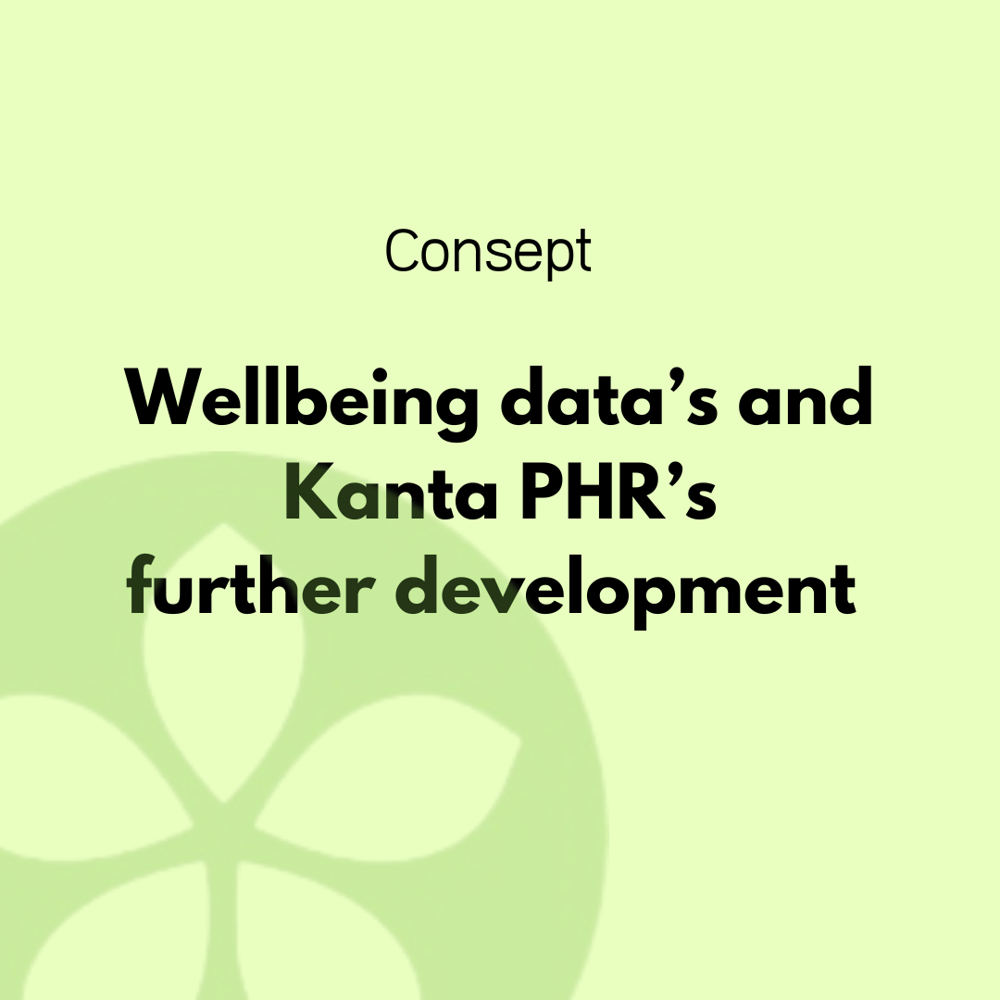
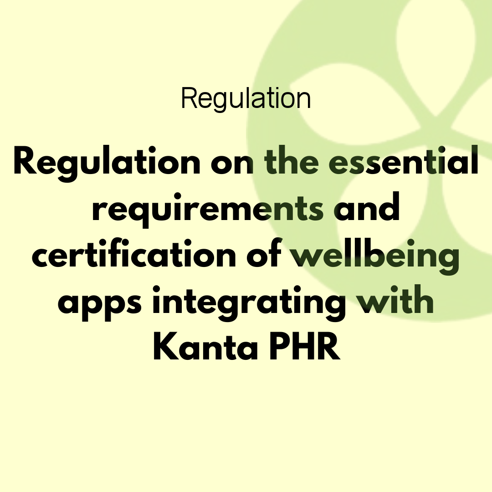
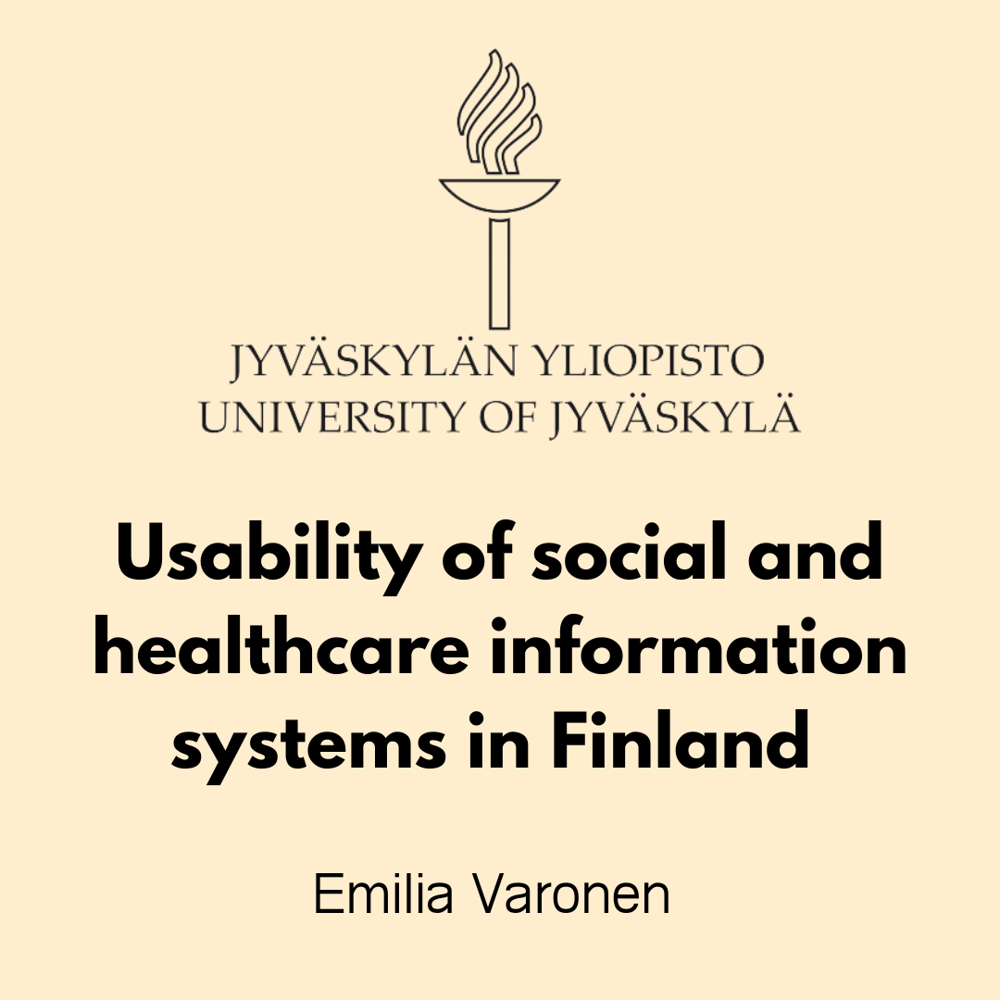
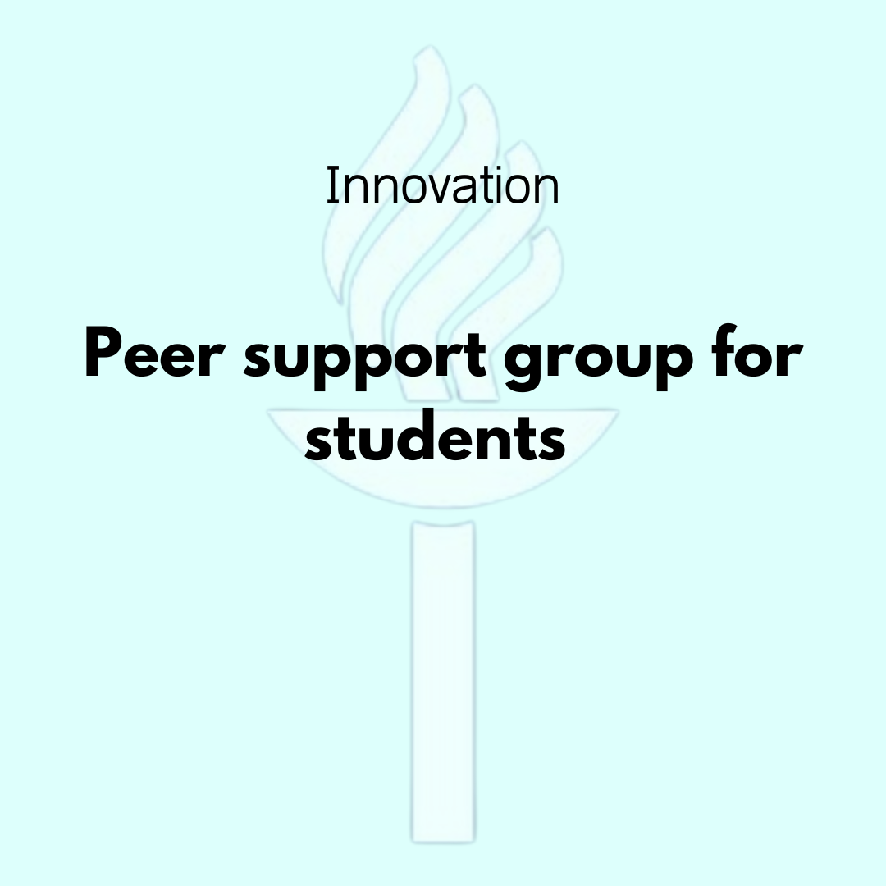
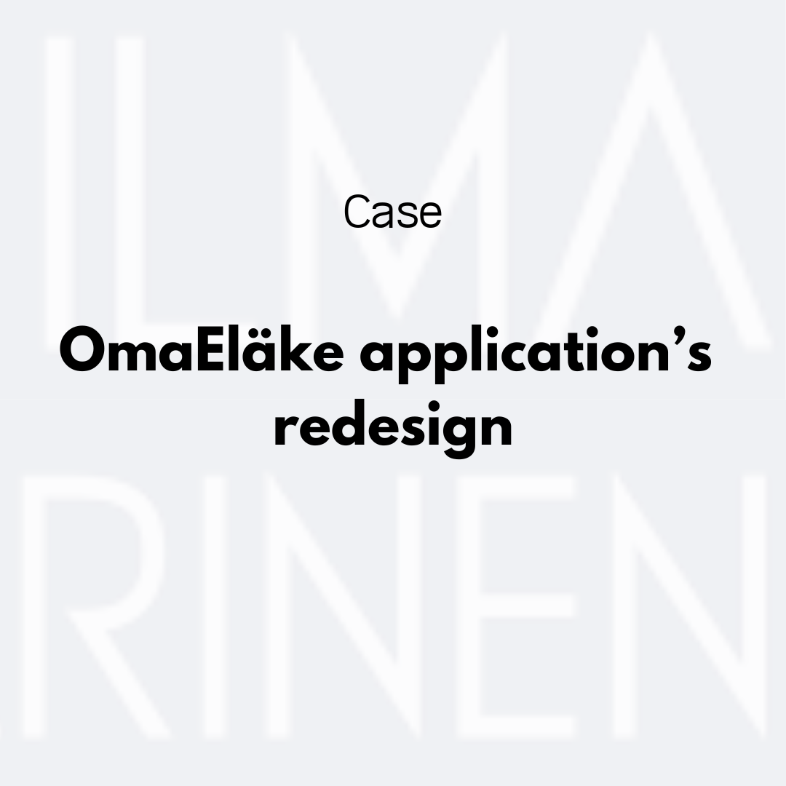
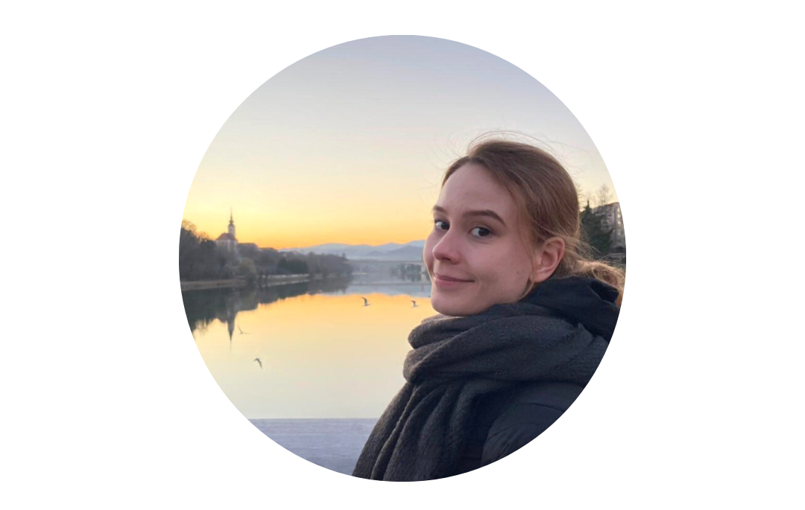

Welcome to my portfolio
I'm glad you found your way here. My name is Emilia and I believe that introducig yourself in an interesting way is always the hardest part. However here's me in a nutshell: I love practising design and art in all of their various forms, I'm thriving to develop as a service- and UX-designer and I enjoy living and working in my new hometown Tampere. It's nice to meet you and hopefully your visit will lead to fruitful conversations between us!
Concept: Wellbeing data's and Kanta PHR's further development

The consept explored the possibilities of utilizing wellbeing data and Kanta PHR in our social and health care. Learn more about the project and our findings below!
Master's thesis
University of Jyväskylä
2022
Curious to learn how Kanta services could be integrated with open data ecosystems? This Master's thesis examines what kind of challenges, benefits, supporting, and hindering factors can be observed in connecting Kanta services to the
open data ecosystem.
Regulation based on
the finnish
customer data law

This regulation created guidelines for the welfare applications connecting with Kanta PHR. Click below to learn how it was created and what the regulation includes.
Bachelor's thesis
University of Jyväskylä
2020

One of the major problems with social and healthcare information systems has been the poor usability of the systems. Learn more about this from my thesis!

Learn how we tackled the challenges Covid-19 created among students at the University of Jyväskylä.

The pension insurance company Ilmarinen commissioned the University of Jyväskylä's Information Systems science master's students to redesign their Omaeläke application. Our group's solution was named the best solution of the course.

To sum it up: I'm a curious person. I love learning new skills and my goal is to gain deeper understanding on people coming from different cultures and backrounds. This way I hope to grow as a designer.
Fun fact: The backround picture and my picture were both taken in my now second home Slovenia where I was in a student exchange during spring 2022.